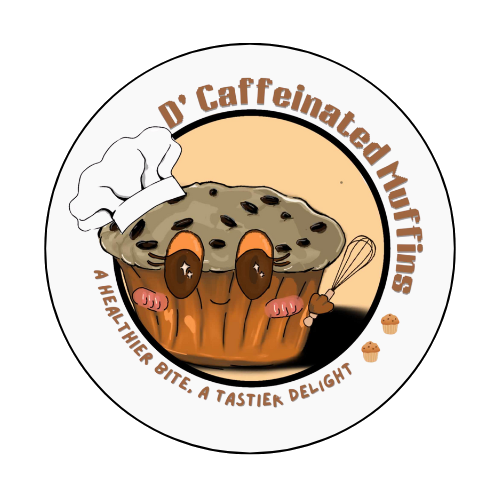
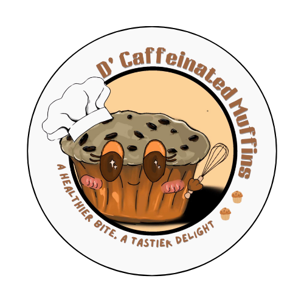
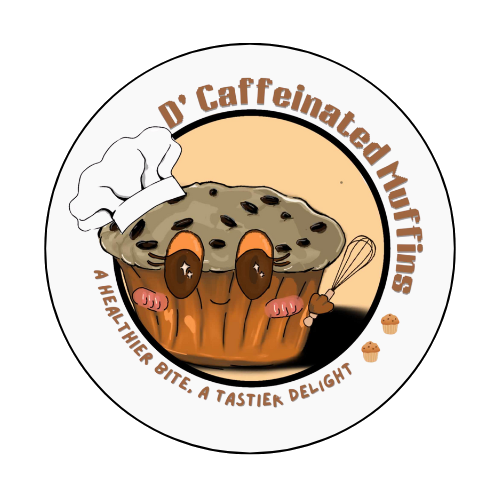

D’Caffeinated Muffins
A Healthier Bite, A Tastier Delight
A Healthier Bite, A Tastier Delight

A Healthier Bite, A Tastier Delight
D'Caffeinated Muffins started with a simple goal: to offer a delicious, healthy alternative to traditional coffee-based snacks. The idea was born from a student project that combined creativity, health awareness, and love for local ingredients. We noticed that many people enjoy the flavor of coffee, but not everyone can handle the caffeine—especially students, professionals, and the elderly. This inspired us to develop a unique solution: muffins infused with rice coffee, a caffeine-free and natural alternative.
Rice coffee, made from roasted rice grains, has long been used as a traditional and healthy drink in some communities. By blending this rich, roasted flavor into our muffins, we created a product that's not only tasty and satisfying but also suitable for people with dietary restrictions, caffeine sensitivity, or those simply making better food choices.
From our humble beginnings in Naga City, we focused on sourcing ingredients locally, keeping our products affordable, and using eco-friendly packaging. We sell through pop-up stores, online platforms, and school events—bringing our muffins directly to the community.
What started as a passion project is now a growing business. We aim to expand across the province and eventually nationwide, continuing to innovate with new flavors, healthier versions, and creative promotions. D'Caffeinated Muffins is more than a snack—it's a movement toward better choices, local pride, and a shared love for comforting food made with care.